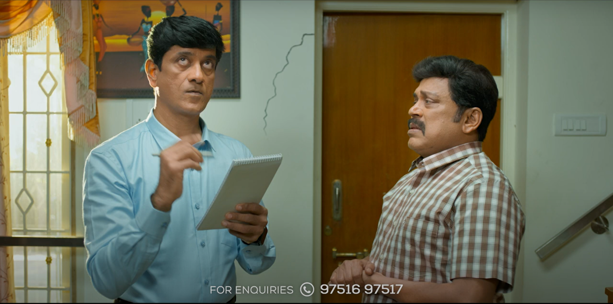

<div class="video container">
  <div class="thumbnail">
  
    
    </div>
  

</div>


<div class="modal fade" id="exampleModalToggle" data-bs-backdrop="static" aria-hidden="true" aria-labelledby="exampleModalToggleLabel" tabindex="-1" >
  <div class="modal-dialog modal-dialog-centered">

    <div class="modal-content">
       <!-- <div class="modal-header">
        <h1 class="modal-title fs-5" id="exampleModalToggleLabel">Modal 1</h1>
        <button type="button" class="btn-close" data-bs-dismiss="modal" aria-label="Close"></button>
      </div>  -->
      <button type="button" (click)="closeVideo()" class="btn-close" data-bs-dismiss="modal" aria-label="Close"></button>

      <div class="modal-body">
        <!-- <iframe class="video1" src="https://www.youtube.com/embed/iB4n75bvxY4?si=XlCPeWFKFLQFPIV4" title="YouTube video player" frameborder="0" allow="accelerometer; autoplay=1; clipboard-write; encrypted-media; gyroscope; picture-in-picture; web-share" allowfullscreen></iframe> -->
        <iframe class="video1" [src]="youtubeUrl" title="YouTube video player" frameborder="0" allowfullscreen></iframe>

      </div>
      <!-- <div class="modal-footer">
        <button class="btn btn-primary" data-bs-target="#exampleModalToggle2" data-bs-toggle="modal">Open second modal</button>
      </div> -->
    </div>
  </div>
</div>
<!-- <div class="modal fade" id="exampleModalToggle2" aria-hidden="true" aria-labelledby="exampleModalToggleLabel2" tabindex="-1">
  <div class="modal-dialog modal-dialog-centered">
    <div class="modal-content">
      <div class="modal-header">
        <h1 class="modal-title fs-5" id="exampleModalToggleLabel2">Modal 2</h1>
        <button type="button" class="btn-close" data-bs-dismiss="modal" aria-label="Close"></button>
      </div> 
      <div class="modal-body">
        Hide this modal and show the first with the button below.
      </div>
      <div class="modal-footer">
        <button class="btn btn-primary" data-bs-target="#exampleModalToggle" data-bs-toggle="modal">Back to first</button>
      </div> 
    </div>
  </div>
</div> -->
<!-- <button class="btn btn-primary" data-bs-target="#exampleModalToggle" data-bs-toggle="modal">Open first modal</button> -->
